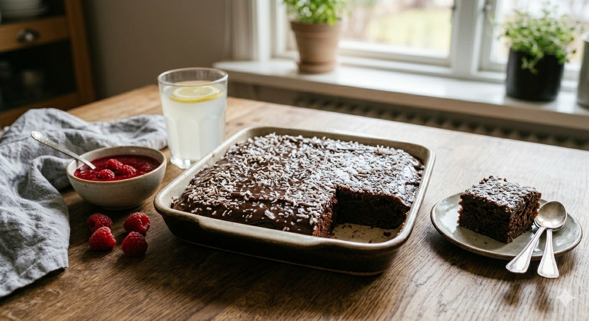

Kärleksmums
Här har ni ett recept på klassiska kärleksmums. Som med många av mina recept är det snabbt och enkelt, men väldigt gott! Ibland lyxar jag till det och gör dubbel sats av glasyren (med extra starkt kaffe!)

Ingridienser:
Kaka:
- Smör 150 g
- Ägg x 2
- Strösocker 3 dl
- Mjölk 1.5 dl
- Vetemjöl 4.5 dl
- Bakpulver 2 tsk
- Kakao 3 msk
- Vaniljsocker 2 tsk
Glasyr:
- Smör 75 g
- Starkt kaffe 0.5 dl
- Kakao 4 msk
- Vaniljsocker 1 msk
- Florsocker 4 dl
- Riven kokos.
Topping:
Gör så här:
- 1. Sätt ugnen på 175 grader.
- 2. Smält smöret och låt svalna lite.
- 3. Vispa ägg och socker pösigt.
- 4. Rör ner smör och mjölk.
- 5. Blanda alla torra ingredienser separat och vänd sedan ner i smeten.
- 6. Häll smeten i en bakplåtspappersklädd form, ungefär 20x30 cm.
- 7. Grädda mitt i ugnen i ca 15–20 minuter. Kakan ska vara genomgräddad men fortfarande saftig.
Glasyr:
- 1. Smält smöret.
- 2. Rör ner kaffe, kakao, vaniljsocker och florsocker.
- 3. Bred glasyren över den svalnade kakan.
- 4. Strö över kokos direkt innan glasyren stelnar.
Tips och tricks:
- Bryn smöret lite lätt för djupare smak.
- Byt ut kaffet mot espresso för kraftigare chokladton.
- Tillsätt en nypa flingsalt i glasyren.
- Låt kakan stå kallt 1 till 2 timmar innan du skär den då blir rutorna snyggare och glasyren perfekt seg.